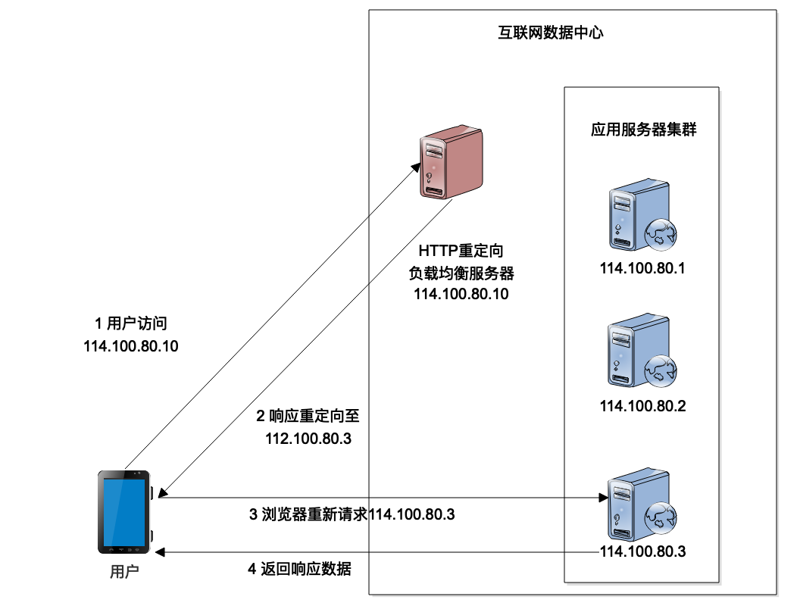
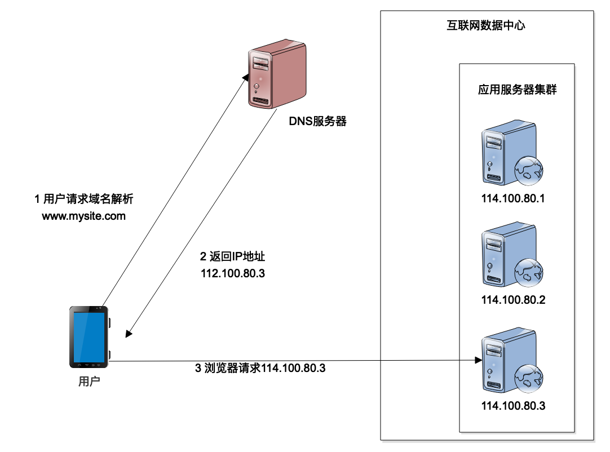
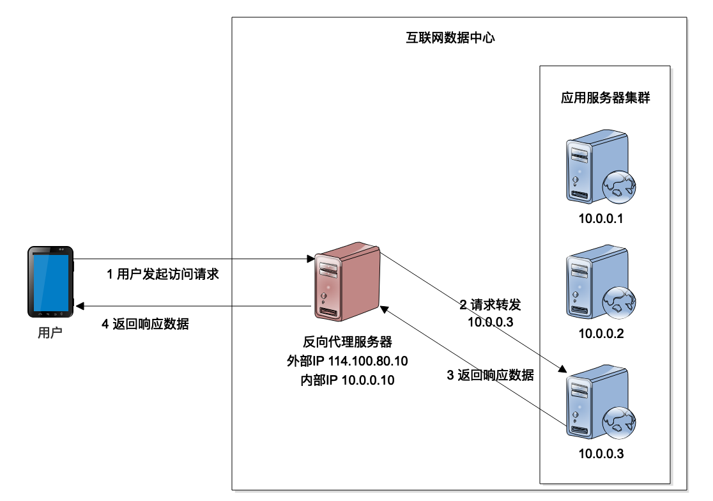
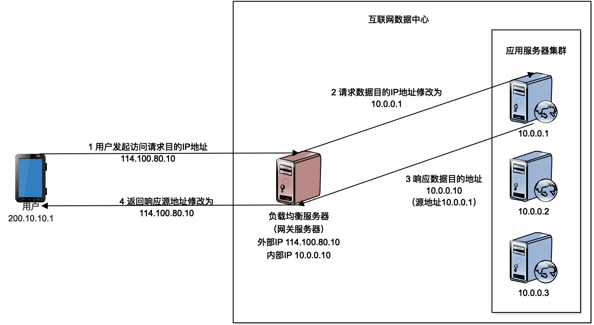
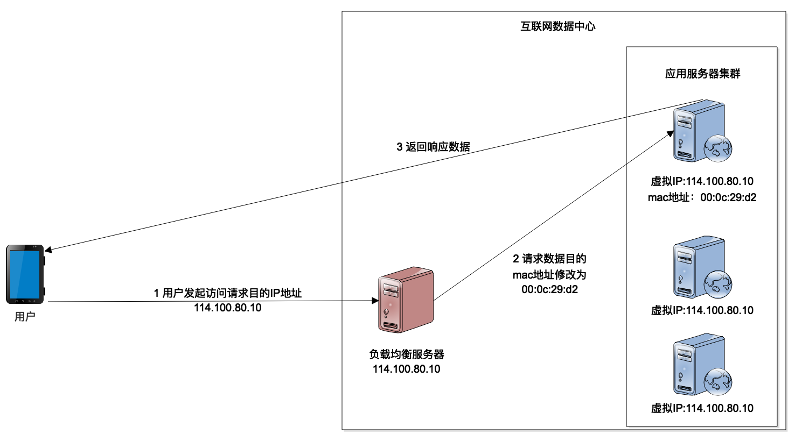

- 00 开篇词 掌握软件开发技术的第一性原理.md
- 01 程序运行原理：程序是如何运行又是如何崩溃的？.md
- 02 数据结构原理：Hash表的时间复杂度为什么是O(1)？.md
- 03 Java虚拟机原理：JVM为什么被称为机器（machine）？.md
- 04 网络编程原理：一个字符的互联网之旅.md
- 05 文件系统原理：如何用1分钟遍历一个100TB的文件？.md
- 06 数据库原理：为什么PrepareStatement性能更好更安全？.md
- 07 答疑 Java Web程序的运行时环境到底是怎样的？.md
- 07 编程语言原理：面向对象编程是编程的终极形态吗？.md
- 08 软件设计的方法论：软件为什么要建模？.md
- 09 软件设计实践：如何使用UML完成一个设计文档？.md
- 10 软件设计的目的：糟糕的程序员比优秀的程序员差在哪里？.md
- 11 软件设计的开闭原则：如何不修改代码却能实现需求变更？.md
- 12 软件设计的依赖倒置原则：如何不依赖代码却可以复用它的功能？.md
- 13 软件设计的里氏替换原则：正方形可以继承长方形吗？.md
- 14 软件设计的单一职责原则：为什么说一个类文件打开最好不要超过一屏？.md
- 15 软件设计的接口隔离原则：如何对类的调用者隐藏类的公有方法？.md
- 16 设计模式基础：不会灵活应用设计模式，你就没有掌握面向对象编程.md
- 17 设计模式应用：编程框架中的设计模式.md
- 18 反应式编程框架设计：如何使程序调用不阻塞等待，立即响应？.md
- 19 组件设计原则：组件的边界在哪里？.md
- 20 答疑 对于设计模式而言，场景到底有多重要？.md
- 20 领域驱动设计：35岁的程序员应该写什么样的代码？.md
- 21 分布式架构：如何应对高并发的用户请求.md
- 22 缓存架构：如何减少不必要的计算？.md
- 23 异步架构：如何避免互相依赖的系统间耦合？.md
- 24 负载均衡架构：如何用10行代码实现一个负载均衡服务？.md
- 25 数据存储架构：如何改善系统的数据存储能力？.md
- 26 搜索引擎架构：如何瞬间完成海量数据检索？.md
- 27 微服务架构：微服务究竟是灵丹还是毒药？.md
- 28 高性能架构：除了代码，你还可以在哪些地方优化性能？.md
- 29 高可用架构：我们为什么感觉不到淘宝应用升级时的停机？.md
- 30 安全性架构：为什么说用户密码泄漏是程序员的锅？.md
- 31 大数据架构：大数据技术架构的思想和原理是什么？.md
- 32 AI与物联网架构：从智能引擎到物联网平台.md
- 33 区块链技术架构：区块链到底能做什么？.md
- 33 答疑 互联网需要解决的技术问题是什么？.md
- 34 技术修炼之道：同样工作十几年，为什么有的人成为大厂架构师，有的人失业？.md
- 35 技术进阶之道：你和这个星球最顶级的程序员差几个等级？.md
- 36 技术落地之道：你真的知道自己要解决的问题是什么吗？.md
- 37 技术沟通之道：如何解决问题？.md
- 38 技术管理之道：你真的要转管理吗？.md
- 38 答疑 工作中的交往和沟通，都有哪些小技巧呢？.md
- 加餐 软件设计文档示例模板.md
- 结束语 期待未来的你，成为优秀的软件架构师.md
24 负载均衡架构：如何用10行代码实现一个负载均衡服务？
负载均衡是互联网系统架构中必不可少的一个技术。通过负载均衡，可以将高并发的用户请求分发到多台应用服务器组成的一个服务器集群上，利用更多的服务器资源处理高并发下的计算压力。
那么负载均衡是如何实现的，如何将不同的请求分发到不同的服务器上呢？
早期，实现负载均衡需要使用专门的负载均衡硬件设备，这些硬件通常比较昂贵。随着互联网的普及，越来越多的企业需要部署自己的互联网应用系统，而这些专用的负载均衡硬件对他们来说成本太高，于是出现了各种通过软件实现负载均衡的技术方案。
HTTP重定向负载均衡
HTTP重定向负载均衡是一种比较简单的负载均衡技术实现。来自用户的HTTP请求到达负载均衡服务器以后，负载均衡服务器根据某种负载均衡算法计算得到一个应用服务器的地址，通过HTTP状态码302重定向响应，将新的IP地址发送给用户浏览器，用户浏览器收到重定向响应以后，重新发送请求到真正的应用服务器，以此来实现负载均衡。

这种负载均衡实现方法比较简单，如果是用Java开发的话，只需要在Servlet代码中调用响应重定向方法就可以了。在简化的情况下，只需要不到十行代码就可以实现一个HTTP重定向负载均衡服务器。
HTTP重定向负载均衡的优点是设计比较简单，但是它的缺点也比较明显，一方面用户完成一次访问，就需要请求两次数据中心，一次请求负载均衡服务器，一次是请求应用服务器，请求处理性能会受很大的影响。
另一个问题是因为响应要重定向到真正的应用服务器，所以需要把应用服务器的IP地址暴露给外部用户，这样可能会带来安全性的问题。负载均衡服务器通常不部署应用代码，也会关闭不必要的访问端口，设置比较严格的防火墙权限，通常安全性更好一点。因此，一个互联网系统通常只将负载均衡服务器的IP地址对外暴露，供用户访问，而应用服务器则只是用内网IP，外部访问者无法直接连接应用服务器。但是使用HTTP重定向负载均衡，应用服务器不得不使用公网IP，外部访问者可以直接连接到应用服务器，系统的安全性会降低。
因此HTTP重定向负载均衡在实践中很少使用。
DNS负载均衡
另一种实现负载均衡的技术方案是DNS负载均衡。我们知道浏览器或者App应用访问数据中心的时候，通常是用域名进行访问，HTTP协议则必须知道IP地址才能建立通信连接，那么域名是如何转换成IP地址的呢？就是通过DNS服务器来完成。当用户从浏览器发起HTTP请求的时候，首先要到DNS域名服务器进行域名解析，解析得到IP地址以后，用户才能够根据IP地址建立HTTP连接，访问真正的数据中心的应用服务器，这时候就可以在DNS域名解析的时候进行负载均衡，也就是说，不同的用户进行域名解析的时候，返回不同的IP地址，从而实现负载均衡。

从上面的架构图可以看到，DNS负载均衡和HTTP重定向负载均衡似乎很像。那么DNS会不会有性能问题和安全性问题呢？
首先和HTTP重定向不同，用户不需要每次请求都进行DNS域名解析，第一次解析后，域名缓存在本机，后面较长一段时间都不会再进行域名解析了，因此性能方面不会是问题。
其次，如果如图中所示，域名解析直接得到应用服务器的IP地址，确实会存在安全性问题。但是大型互联网应用通常并不直接通过DNS解析得到应用服务器IP地址，而是解析得到负载均衡服务器的IP地址。也就是说，大型网互联网应用需要两次负载均衡，一次通过DNS负载均衡，用户请求访问数据中心负载均衡服务器集群的某台机器，然后这台负载均衡服务器再进行一次负载均衡，将用户请求分发到应用服务器集群的某台服务器上。通过这种方式，应用服务器不需要用公网IP将自己暴露给外部访问者，避免了安全性问题。
DNS域名解析是域名服务商提供的一项基本服务，几乎所有的域名服务商都支持域名解析负载均衡，只需要在域名服务商的服务控制台进行一下配置，不需要开发代码进行部署，就可以拥有DNS负载均衡服务了。目前大型的互联网应用，淘宝、百度、Google等全部使用DNS负载均衡。比如用不同的电脑ping www.baidu.com就可以看到，不同电脑得到的IP地址是不同的。
反向代理负载均衡
我在[第22篇]，缓存架构中提到用户请求到达数据中心以后，最先到达的就是反向代理服务器。反向代理服务器查找本机是否有请求的资源，如果有就直接返回资源数据，如果没有，就将请求发送给后面的应用服务器继续处理。事实上，发送请求给应用服务器的时候，就可以进行负载均衡，将不同的用户请求分发到不同的服务器上面去。Nginx这样的HTTP服务器就会同时提供反向代理与负载均衡功能。

反向代理服务器是工作在HTTP协议层之上的，所以它代理的也是HTTP的请求和响应。作为互联网应用层的一个协议，HTTP协议相对说来比较重，效率比较低，所以反向代理负载均衡通常用在小规模的互联网系统上，只有几台或者十几台服务器的规模。
IP负载均衡
反向代理负载均衡是工作在应用层网络协议上的负载均衡，因此也叫应用层负载均衡。应用层负载均衡之下的负载均衡方法是在TCP/IP协议的IP层进行负载均衡，IP层是网络通讯协议的网络层，所以有时候叫网络层负载均衡。它的主要工作原理是当用户的请求到达负载均衡服务器以后，负载均衡服务器会对网络层的数据包的IP地址进行转换，修改IP地址，将其修改为应用服务器的IP地址，然后把数据包重新发送出去，请求数据就会到达应用服务器。

IP负载均衡不需要在HTTP协议层工作，可以在操作系统内核直接修改IP数据包的地址，因此，效率比应用层的反向代理负载均衡高得多。但是它依然有一个缺陷，不管是请求还是响应的数据包，都要通过负载均衡服务器进行IP地址转换，才能够正确地把请求数据分发到应用服务器，或者正确地将响应数据包发送到用户端程序。请求的数据通常比较小，一个URL或者是一个简单的表单，但是响应的数据不管是HTML还是图片，或者是JS、CSS这样的资源文件通常都会比较大，因此负载均衡服务器会成为响应数据的流量瓶颈。
数据链路层负载均衡
数据链路层负载均衡可以解决响应数据量大而导致的负载均衡服务器输出带宽不足的问题。也就是说，负载均衡服务器并不修改数据包的IP地址，而是修改数据链路层里的网卡mac地址，在数据链路层实现负载均衡。而应用服务器和负载均衡服务器都使用相同的虚拟IP地址，这样IP路由就不会受到影响，但是网卡会根据自己的mac地址，选择负载均衡服务器发送到自己网卡的数据包，交给对应的应用程序去处理，处理结束以后，当把响应的数据包发送到网络上的时候，因为IP地址没有修改过，所以这个响应会直接到达用户的浏览器，而不会再经过负载均衡服务器。

链路层负载均衡避免响应数据再经过负载均衡服务器，因而可以承受较大的数据传输压力，所以，目前大型互联网应用基本都使用链路层负载均衡。
Linux上实现IP负载均衡和链路层负载均衡的技术是LVS，目前LVS的功能已经集成到Linux中了，通过Linux可以直接配置实现这两种负载均衡。
小结
负载均衡技术在早期刚出现的时候，设备昂贵，使用复杂，只有大企业才用得起、用得上，但是到了今天，随着互联网技术的发展与普及，负载均衡已经是最常用的分布式技术之一了，使用也非常简单。如果使用云计算平台，只需要在控制台点击几下，就可以配置实现一个负载均衡了。即使是自己部署一个负载均衡服务器，不管是直接用Linux还是用Nginx，也不是很复杂。
我在这里主要描述的是负载均衡的网络技术架构。事实上，实现一个负载均衡，还需要关注负载均衡的算法，也就是说，当一个请求到达负载均衡服务器的时候，负载均衡服务器该选择集群中的哪一台服务器将请求发送给它？
目前主要的负载均衡算法有轮询、随机、最少连接几种。轮询就是将请求轮流发给应用服务器，随机就是将请求随机发送给任一台应用服务器，最少连接则是根据应用服务器当前正在处理的连接数，将请求分发给最少连接的服务器。
思考题
利用HTTP重定向只需要很少代码就可以完成一个简化的负载均衡，你能否利用你熟悉的编程语言写一个简化的HTTP重定向负载均衡demo？
欢迎你在评论区写下你的答案，我会和你一起交流，也欢迎把这篇文章分享给你的朋友或者同事，一起交流一下。
© 2019 - 2023 Liangliang Lee. Powered by Vert.x and hexo-theme-book.